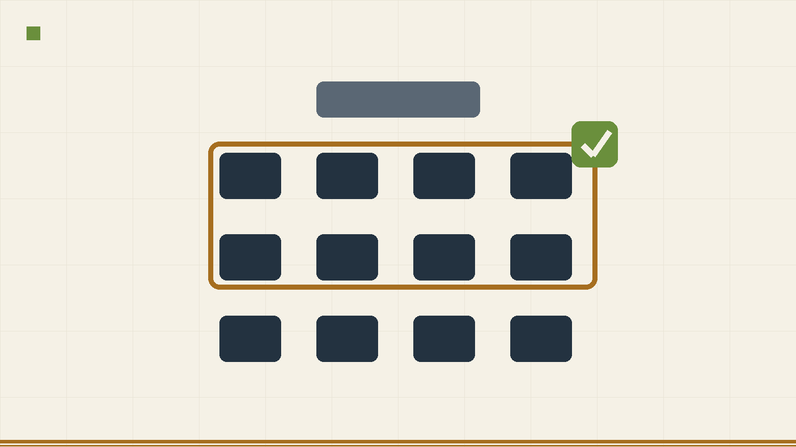
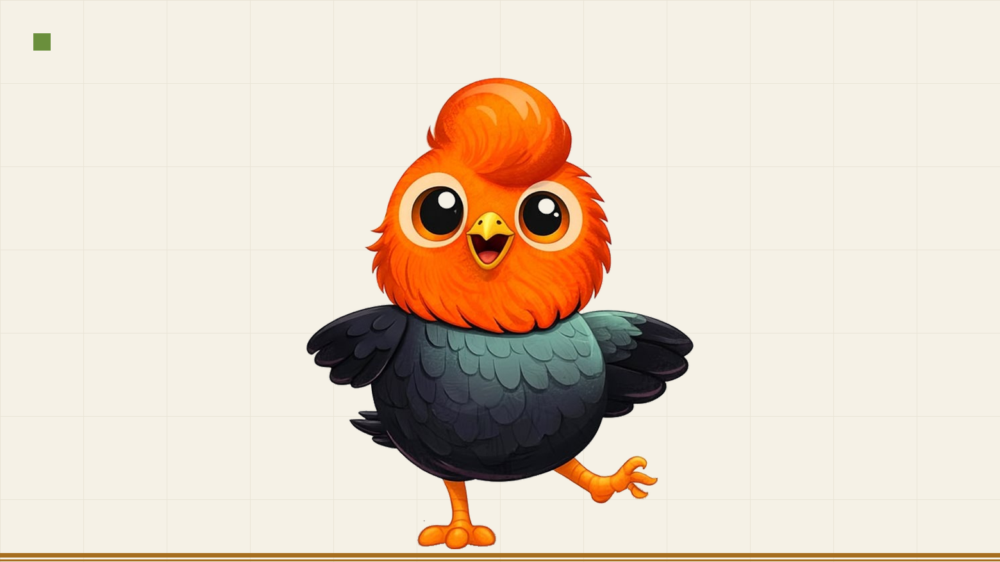
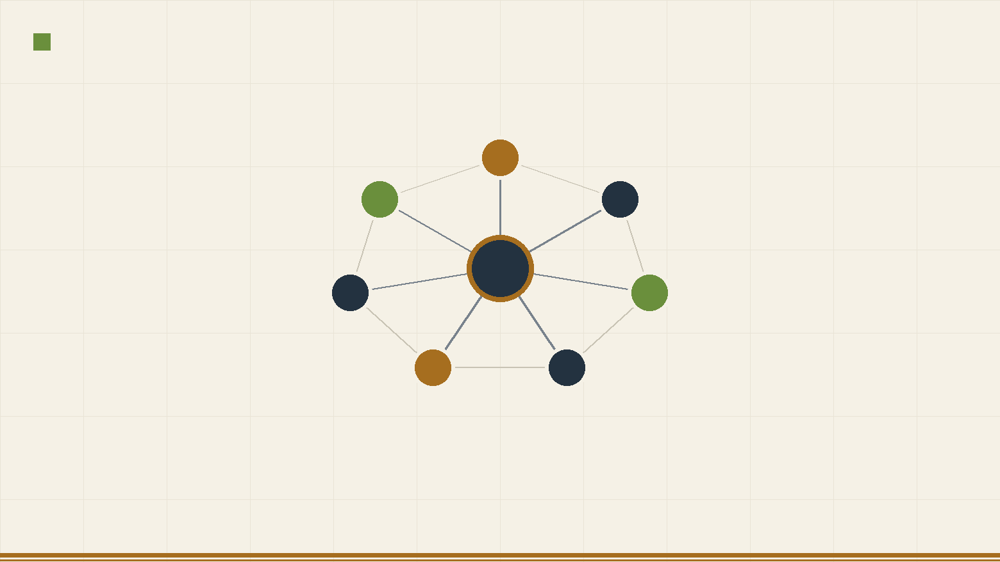

The binding constraint on AI in education is not technology. It's organizational culture
Exploring the critical distinction between performance and learning in the age of AI.
Helping countries improve teaching quality and leverage AI to tackle the global learning crisis. Creator of Teach (used in 40+ countries) and winner of the 2025 World Bank Presidential Innovation Award.
 EM
EM
Senior Economist | Education Global Practice
Download, use, and adapt these open-source tools to improve teaching quality. No registration required.
Tools to measure, improve, and support classroom instruction

Start measuring teaching quality in your classrooms today. This free, validated observation tool helps you identify what's working and where teachers need support.

Transform how you train teachers. This evidence-based framework uses behavioral science to make professional development effective. Includes ready-to-use training materials.
Practical resources for integrating AI in schools and classrooms

'La IA en el Aula, Aliada Pedagogica' - Practical guidance and resources to help teachers integrate AI effectively in their classrooms. Includes a video of the initiative and a guide in Spanish co-created with teachers in Lima.

A practical AI training method to help school leaders reduce administrative tasks and dedicate more time to instructional leadership.

Have questions about AI in education? Ask our AI-powered research assistant. It contains all our briefs, blogs, and studies - get instant answers with citations.
Learn More
Automated scoring of classroom observations with large language models on the Teach framework: 92.9% agreement with certified human observers across 199 primary classrooms in Peru. Research paper under journal review.

An AI-powered tool with 30+ policy guidances from countries worldwide. Don't start from scratch - explore what others are doing and adapt best practices for your context.

A small language model distilled from thousands of anonymized Claude coaching conversations. Runs fully offline, as a Windows app or in the browser on locked school computers. Nothing leaves the device. Evaluation results published in full: 1.55/2 vs 1.85/2 against the cloud model.
An open evaluation harness for AI learning platforms. Every score must cite hashed evidence that can be re-verified later; tests that touch crisis signals or minors' data require a human signature before they run. Built for ministries and procurement teams that must defend decisions with public money.

The Latin American network on AI and learning science: partner organizations, a shared evidence base, and syntheses showing that design, not the model, determines learning outcomes. Trilingual (ES/EN/PT).
Peer-reviewed articles, policy briefs, and working papers on education, AI, and development.
Selected posts from the World Bank Education Blog.
Exploring the critical distinction between performance and learning in the age of AI.

Exploring the critical distinction between performance and learning in the age of AI.

Addressing concerns about AI in classrooms and how technology can help close educational gaps.

How generative AI is widening the digital divide and what we can do about it.
Regional Focal Point for Teachers and EdTech. Task Team Leader for Chile and Peru education operations.
Global Lead for Teachers Thematic Group. TTL for Teach and Coach. Scaled Teach to 40+ countries.
Led Teach development from concept through global deployment. Conceived Coach and raised $7M funding.
Core team member for WDR 2017. Authored chapter on political economy of policy failure.

Piloting AI tutoring and career coaching for 5th grade secondary students in Lima, Peru. Working with DRELM to help students develop skills for the future economy. One of only 7 projects selected Bank-wide.
Learn More
Conducting a rigorous evaluation of El Director LIBRE's impact on school leadership practices. Measuring how AI training helps directors reduce administrative burden and improve instructional leadership.
Learn More
A weekly newsletter for World Bank staff on practical ways to use AI in their work. Tips, tools, and real examples to boost productivity. Reaching 10,000+ staff across all regions.
WB Employee? Subscribe